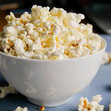
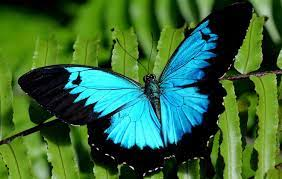
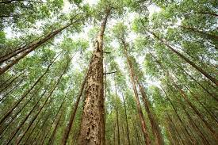

ABOUT
Things I like
Popcorn
Butterflies
Trees
More popcorn

Corn was domesticated about 10,000 years ago, in what is now Mexico.[3] Archaeologists discovered that people have known about popcorn for thousands of years. Fossil evidence from Peru suggests that corn was present there as early as 4700 BCE, and popped there over 1000 years ago.[4][5][6] The oldest definitive evidence for popping corn was discovered in New Mexico, United States, determined to be as early as 3600 BCE, and attributed to the Ancestral Puebloan peoples, who maintained trade networks with peoples in tropical Mexico
A butterfly is a (usually) day-flying insect of the order Lepidoptera. They are grouped together in the suborder Rhopalocera. Butterflies are closely related to moths, from which they evolved about 56 million years ago.[1] The earliest discovered fossil moth was 200 million years ago.[2]
In botany, a tree is a perennial plant with an elongated stem, or trunk, usually supporting branches and leaves. In some usages, the definition of a tree may be narrower, including only woody plants with secondary growth, plants that are usable as lumber or plants above a specified height. In wider definitions, the taller palms, tree ferns, bananas, and bamboos are also trees.